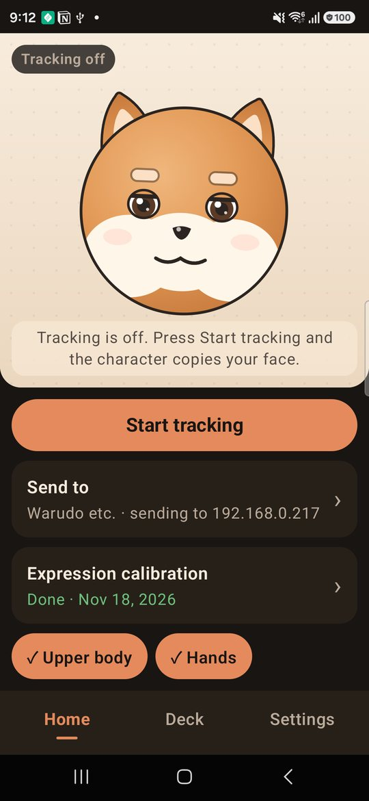
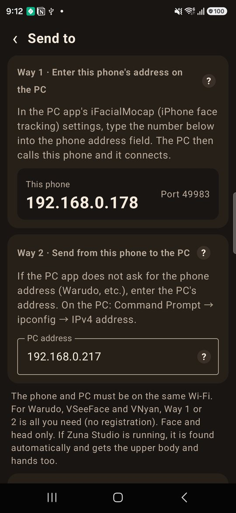

Your Android phone is a face tracker
Use your phone camera for face tracking in Warudo, VSeeFace and VNyan. No iPhone needed.
We'll email you a Play Store invite link.
From GitHub: pick the .apk file under Assets.
Android 10+ (64-bit) · Phone and PC on the same Wi-Fi
User guide
iFacialMocap · Wi-Fi → PC
Works with
- Warudo
- VSeeFace
- VNyan
and any app that supports iFacialMocap. VMC apps work too (advanced).
Set up in 3 steps
Put the phone and PC on the same Wi-Fi.
Stand the phone up
30–50 cm from your face, at eye level, lit from the front.

Choose iFacialMocap on the PC
In your PC app, pick the iFacialMocap tracker and enter the phone address shown in the app.

Start and calibrate
Tap Start tracking, then calibrate once (45 s).

Built for streaming
Video stays on the phone
Only tracking numbers go to your PC, over your own Wi-Fi. Nothing is recorded or uploaded.
No account, no ads
No sign-up, no ads, no analytics.
Calibrated to your face
Calibrate once. Moved the phone? A 4-second quick calibration.
Front, back or ultra-wide
Use the sharper back camera. A voice guide reads the steps.
Works with the screen off
Tracking keeps running in the background, with glitchy jumps filtered out.
In 4 languages
A setup guide and ? tips in English, 한국어, 日本語 and 简体中文.
Device requirements
| Minimum | Recommended | |
|---|---|---|
| Android | Android 10 or newer | Android 13 or newer |
| Processor | 64-bit (ARM64) | 2021 or newer, mid-range chip or better |
| Memory | 4 GB RAM | 6 GB RAM or more |
| Network | Phone and PC on the same Wi-Fi | 5 GHz Wi-Fi, PC on cable or 5 GHz |
Tested on a Galaxy S24 Ultra (Android 16) at about 40 fps. Older phones run slower.
Do more with Zuna Studio
Our Windows app. The same phone also tracks your arms and fingers, and runs your stream from a phone deck. Not needed for Warudo, VSeeFace or VNyan.
| Feature | Warudo / VSeeFace / VNyan | Zuna Studio |
|---|---|---|
| Face and head | Yes | Yes |
| Shoulders and arms | needs another tracker | Yes |
| Fingers | needs another tracker | Yes |
| Calibration started from the PC | No | Yes |
| Stream deck on your phone or tablet | No | Yes |
| Only your phone can move your avatar | No | Yes |
Everything Studio adds
Tracking
- Upper body, arms and fingers from the same camera
- Arms fitted to your avatar's proportions
- Quick calibration from a key or a deck button
Avatar
- Mouth shapes A·I·U·E·O plus microphone lip sync
- Expression hotkeys and automatic expressions
- Swaying hair, props and items to throw
Stream
- Transparent output straight into OBS (Spout2)
- Deck: OBS scenes, record, replay, mute
- Background music by mood and one-tap macros
Peace of mind
- Phone registration blocks other devices
- New deck devices need a 4-digit code on the PC
- Video never leaves the phone


Free consultation
A Studio made for your avatar
Studio isn't public. We build it for your avatar, with expressions, arms, fingers, camera and deck set up. The consultation is free.
Ask about Zuna Studiomaxjang123@gmail.com
What to send us
- Avatar filesVRChat project or .unitypackage, Humanoid FBX, or VRM
- Shape keysARKit / Perfect Sync, VRChat visemes, VRM, MMD, or none
- ShaderName and version (e.g. lilToon 2.x)
- LicenseTerms or store page. Streaming and edits must be allowed
- Extras (optional)Expression animations, outfits, props, physics
- Your setupPhone, Windows 10/11 64-bit (DirectX 12), OBS + Spout2
- Your stream (optional)OBS scenes, backgrounds, music, camera angles
Send files as a download link, not attachments. Never send passwords.
FAQ
Do I need an iPhone or the iFacialMocap app?
No. Your PC app sees Zuna Facecap as iFacialMocap.
Is my camera video sent anywhere?
No. Video stays on the phone. Only tracking numbers go to your PC.
Does it need the internet?
No. It runs on your Wi-Fi. The internet is only used to check for updates.
Does it track my body and hands in Warudo, VSeeFace or VNyan?
Face and head only. For arms and fingers, use Zuna Studio.
Can I use the back camera?
Yes: Settings → Camera → Back or Back wide. Turn on the voice guide.
Do I need Zuna Studio?
Not for Warudo, VSeeFace or VNyan. Studio adds more and is available on request.
My PC app can't find the phone
Check that both are on the same Wi-Fi (not a guest network), the PC app is allowed on Private networks in Windows Firewall, VPN is off, and the phone address is current.
Will my older phone work?
Yes, with Android 10+ and a 64-bit chip. It runs slower; turn off Upper body, Hands and 60 fps tracking.
Is the APK safe? How do I update?
It's our signed test build. It installs as Zuna Facecap Dev, shows updates from GitHub in the app, and uninstalls like any app.
Try it today
All you need is your phone and the PC app you already use.
We'll email you a Play Store invite link.
From GitHub: pick the .apk file under Assets.
Android 10+ (64-bit) · Phone and PC on the same Wi-Fi